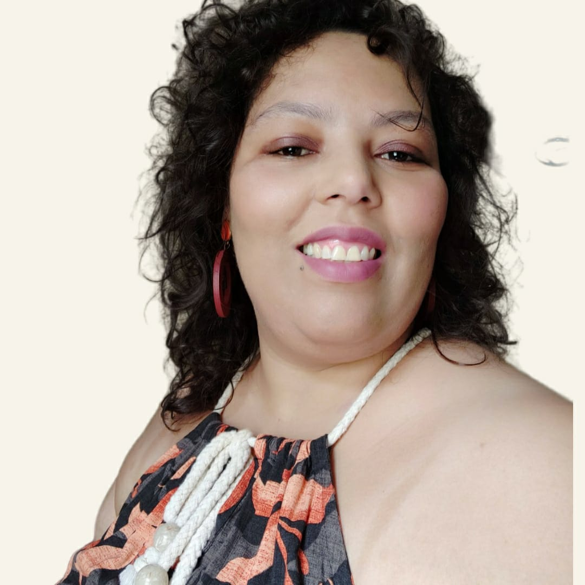

CAROLINA RODRIGUES
Produtora Audiovisual
Bora tirar seu filme do roteiro?
Funções de diretora de produção, assistente de produção, produção de set e assistente de direção. Experiência em publicidade, curta e longa metragens e séries